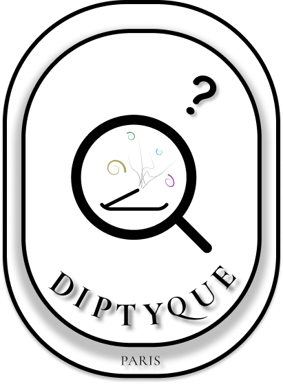

<div class="content-wrapper">

  <section class="section">
    <div class="scent-hero reveal-up">
      <div class="scent-title-wrap">
        <h2 class="scent-hero-title">Find Your Signature</h2>
        
      </div>
      <p class="scent-hero-intro">당신의 기억, 분위기, 그리고 계절을 닮은 향을 찾아보세요. 몇 가지 질문을 통해 딥디크가 당신만을 위한 향기를 큐레이션해 드립니다.</p>
    </div>

    <div class="finder-stage">
      <div class="finder-progress reveal-up" style="transition-delay: 100ms;">Scent Finder <span id="currentStep">1</span> / 3</div>

      <!-- Step 1: Mood -->
      <div class="step-container active reveal-up" style="transition-delay: 200ms;" data-step="1">
        <h2 class="step-question">어떤 무드의 향을 찾고 계신가요?</h2>
        <div class="options-grid">
          <div class="option-card" data-value="Soft">
            <span>Soft</span>
            <small>부드럽고 섬세한</small>
          </div>
          <div class="option-card" data-value="Fresh">
            <span>Fresh</span>
            <small>산뜻하고 생기 있는</small>
          </div>
          <div class="option-card" data-value="Deep">
            <span>Deep</span>
            <small>깊고 인상적인</small>
          </div>
          <div class="option-card" data-value="Warm">
            <span>Warm</span>
            <small>포근하고 따뜻한</small>
          </div>
        </div>
      </div>

      <!-- Step 2: Time -->
      <div class="step-container" data-step="2">
        <h2 class="step-question">어떤 시간대의 분위기를 담고 싶으신가요?</h2>
        <div class="options-grid">
          <div class="option-card" data-value="Morning">
            <span>Morning</span>
            <small>맑고 여유로운 시작</small>
          </div>
          <div class="option-card" data-value="Afternoon">
            <span>Afternoon</span>
            <small>햇살이 가장 깊은 시간</small>
          </div>
          <div class="option-card" data-value="Evening">
            <span>Evening</span>
            <small>차분히 물드는 저녁</small>
          </div>
          <div class="option-card" data-value="Night">
            <span>Night</span>
            <small>고요하게 깊어지는 밤</small>
          </div>
        </div>
        <button type="button" class="btn-back">Previous Step</button>
      </div>

      <!-- Step 3: Season -->
      <div class="step-container" data-step="3">
        <h2 class="step-question">어떤 계절을 위한 향인가요?</h2>
        <div class="options-grid">
          <div class="option-card" data-value="Spring"><span>Spring</span><small>가볍게 피어나는 계절</small></div>
          <div class="option-card" data-value="Summer"><span>Summer</span><small>밝고 선명한 계절</small></div>
          <div class="option-card" data-value="Autumn"><span>Autumn</span><small>깊이 무르익는 계절</small></div>
          <div class="option-card" data-value="Winter"><span>Winter</span><small>차분히 머무는 계절</small></div>
        </div>
        <button type="button" class="btn-back">Previous Step</button>
      </div>

      <!-- Result -->
      <div class="result-container" id="resultContainer">
        <div class="result-media">
          
        </div>
        <div class="result-content">
          <span class="match-label">당신의 무드에 어울리는 향</span>
          <h2 class="result-title" id="resTitle"></h2>
          <p class="result-desc" id="resDesc"></p>
          <div class="notes-display" id="resNotes"></div>
          <div class="product-bottom" style="margin-top: 0; justify-content: flex-start;">
            <a href="#" class="add-btn" id="resLink" target="_blank" rel="noopener noreferrer">더 알아보기</a>
          </div>

          <div class="layer-suggestion">
            
            <div class="layer-text">
              <h4>조화로운 레이어링</h4>
              <p id="layerDesc">베이 캔들과 함께 매치해 더욱 깊고 차분한 향의 분위기를 완성해보세요.</p>
            </div>
          </div>
        </div>
      </div>
    </div>
  </section>

</div>